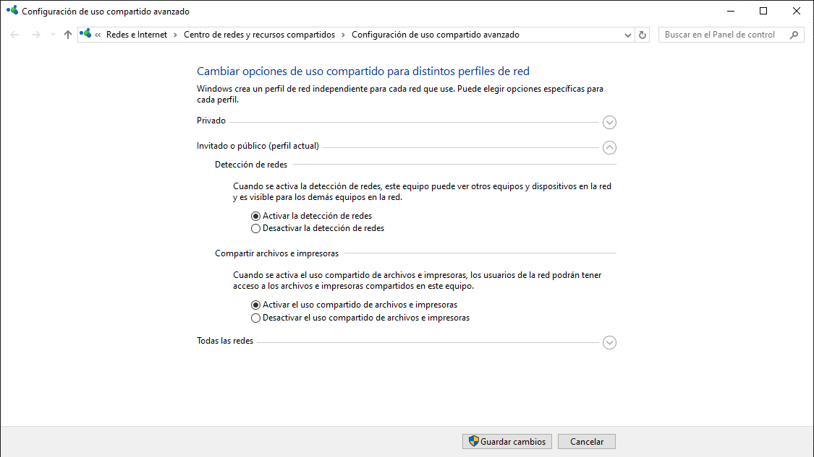
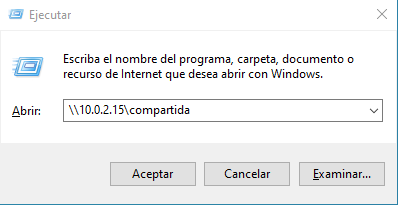

Samba es una herramienta muy versátil con la que crear un entorno de red unificado que satisface las necesidades tanto de usuarios de Linux como de Windows.
Hoy echaremos un vistazo a los pasos a seguir para compartir carpetas de Linux a Windows usando esta herramienta.
Siga leyendo para aprender de cero o si quieres saltar a una sección específica del tutorial haga click en el link correspondiente:
Comenzamos descargando la última versión de VirtualBox para nuestra plataforma teniendo en cuenta la versión de nuestro sistema operativo. Una vez descargado debemos proceder con la instalación y configuración del programa.
Una vez iniciado el VirtualBox, debemos crear la red local en la que vamos a compartir archivos. Esto es muy sencillo, solo debemos presionar CTRL+H y pulsar en "crear". De esta forma podremos conectar nuestra máquina virtual de Linux y Windows a la misma red.
Ahora procederemos a la descarga de la ISO de Windows, una vez descargada regresamos a VirtualBox y hacemos click en el botón "Nueva", al hacerlo se abrirá la pestaña de creación de máquina virtual. Una vez aquí debemos ponerle un nombre a nuestra máquina, seleccionar su ruta y elegir la imagen ISO, al hacer click en "otro" iremos a nuestras descargas en el explorador de archivos e iremos a donde hayamos descargado Windows10, lo seleccionamos y le damos a siguiente.
Ponemos el nombre de usuario y contraseña que deseemos y pegamos nuestra clave de producto. Después le daremos el hardware y disco duro que deseemos y finalizaremos el proceso de creación. Al abrir nuestra recien creada máquina virtual tendremos delante nuestra el escritorio de Windows10.
Una vez aquí, se deben realizar las actualizaciones necesarias. Después diríjase a la barra de búsqueda y escriba: administrar configuración avanzada de uso compartido. Haga click en el primer resultado, active ambas opciones como se ve en la imagen y guarde los cambios.
Acto seguido, volvemos a la barrra de tareas y escribimos Firewall de Windows Defender y seleccionamos el primer resultado. Hacemos click en Configuración avanzada, después en Reglas de entrada y activamos todas las reglas de Archivos e impresoras compartidos. Hacemos lo mismo en Reglas de salida.
Con esto finaliza la preparación de Windows.
Nuevamente descargamos la ISO de Linux, el proceso para la creación de la máquina virtual es muy parecida a la de Windows. En VMWare hacemos click en "Nueva", ponemos el nombre que queramos, seleccionamos la ruta y la imagen ISO que nos hemos descargado anteriormente y hacemos click en siguiente.
Escribimos el nombre para nuestra máquina virtual y establecemos la contraseña que queramos usar, es importante acordarse de esta puesto que la necesitaremos más adelante. Le damos a siguiente y establecemos el hardware y disco duro que queramos darle a la máquina. Finalizamos el proceso de instalación y abrimos nuestra máquina virtual de Linux. Automaticamente comenzará la instalación, hay que tener en cuenta que puede durar varios minutos. Una vez termine Linux se reiniciará, y entonces tendremos el escritorio delante.
Una vez en Linux, abriremos la terminal y nos cambiamos a root escribiendo "su", pulsando enter y poniendo la contraseña que establecimos con anterioridad.
Comprobaremos si nuestro sistema operativo está actualizado con los siguientes comandos: "apt upgrade" y "apt update". Cuando nos pida confirmacón, pulsaremos la tecla "Y" en nuestro teclado para finalizar.
A continuación pueden ver en este vídeo toda la descarga y configuración de Samba en Linux:
Antes de pasar de nuevo a Windows por último debemos reiniciar el proceso de Samba para que se apliquen todas las configuraciones. Para ello, escribimos "systemctl restart smbd.service" en la terminal de Linux.
Una vez tenemos Linux y Samba configurado volvemos a nuestra máquina virtual de Windows y escribimos en la barra de búsqueda "CMD" y pulsamos enter para abrir la consola de comandos de Windows. Una vez abierta escribiremos ping y la ip que hemos comprobado en Linux. De esta forma comprobaremos que existe conectividad entre las dos máquinas.
Finalmente, escribimos en la barra de búsqueda "ejecutar" pulsamos enter y entonces escribimos "\\nuestraipdelinux\compartida", hacemos click en abrir y escribimos la contraseña establecida en Linux para acceder a la carpeta compartida entre Linux y Windows
